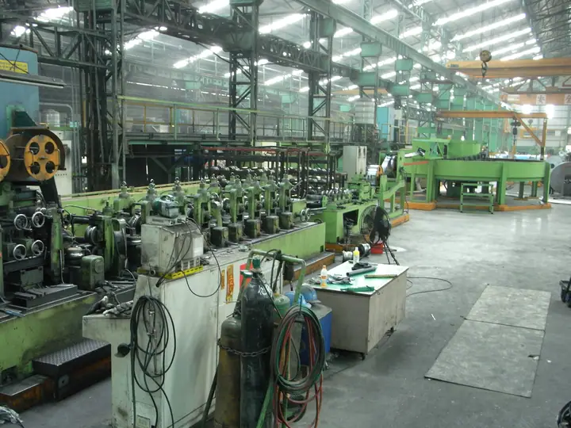
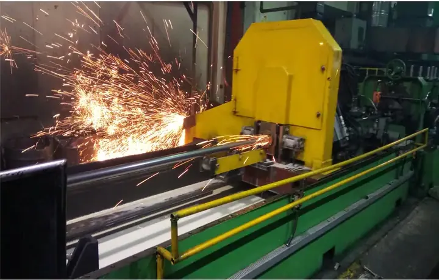

Tube cutting and bending
Control systems for tube cut-off machines and CNC/NC tube benders, using a PLC or PC-based controller with Charger Mechatronic servo motors and drives.
Who it is for
- Pipe mills cutting tube to length
- Tube fabricators running CNC/NC benders
- Older cut-off and bending machines that need a new controller
What to send for a quote
- Tube diameter and wall thickness
- Cut length; bend angle and radius (if any)
- Speed or output
- Existing controller
- Photos or video of the machine running
What changes with the system
| Item | Common situation | With the CMV system |
|---|---|---|
| Tube cut length | Wide tolerance | Length measurement by encoder |
| Bend programming | Hard to reprogram | New PLC or PC-based controller |
| Spare parts | None left for the old controller | Equipment and parts through CMV in Vietnam |
Supply scope
- Controller
- PLC or PC-based
- Drive train
- SVMF servo, VFI-CG80 drive
- Length measurement
- Encoder
- Panels
- Control panel
- Diameter, thickness, speed
- Confirmed per machine in the technical proposal
Commercial terms
- Survey
- On site, or from photos, video and line data
- Work time, downtime
- Stated in the quotation
- Warranty
- Stated in the quotation and contract
- Spare parts
- Supplied through CMV in Vietnam
- Contract, invoice
- With CÔNG TY TNHH CHARGER MECHATRONIC (Vietnam tax code 0319206171)
System diagram
Diagram as published by Charger Mechatronic.
On real lines






Control functions
- Tracking control
- Cut-to-length control
- Positioning control
- Coil diameter calculation
- Load sharing control
- Synchronization control
- Looper control
- Tension control
- Speed control
- Storage zone control
- Torque control
- Level control
Frequently asked questions
Do you support tube benders?
Yes. CMV supplies controls for CNC/NC tube benders.
What is needed for a quote?
Tube diameter and wall thickness, cut length, speed, the existing controller, with photos or video.
Contact CMV
Business hours: Monday to Friday, Vietnam time. Vietnamese, Chinese and English spoken.